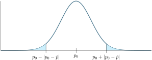
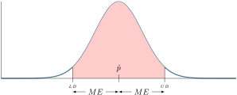

In this section, we lay the groundwork for Hypothesis Testing, where we make claims, and applying our statistical knowledge to collected data to support or cast doubt on these claims.
Subsection4.3.1The Philosophy of Hypothesis Testing
A (maybe) Biased Coin.
You and a friend each day flip a coin to see which one of you buys lunch. You always choose heads, and your friend chooses tails. After 25 coin flips, it has come up heads 16 times. Your friend claims that this coin you use is biased and untrustworthy. You disagree.
Exploration4.3.1.Are we sure it is (isn't) Biased?
Your friend has a point in this case: heads has come up quite a few times, more than half for sure, and they may be right to suspect that the coin may favor heads. On the other hand, it's possible to get 16 coin flips out of 25 just by chance. But is this a common event, or an event so rare that it's more likely the coin is biased?
In essence, your friends is claiming that the proportion of coin flips which come up heads isn't a half, or \(p\neq 0.5\text{.}\) Your assertion is that this result could come from a fair coin and it's possible \(p=0.5\) despite this outcome.
(a)
Find \(\hat{p}, SE_{\hat{p}}\) for the proportion of the sample that comes up heads.
(b)
Find a 95% confidence interval for the proportion of coin flips that comes up heads.
(c)
Verify that 0.5 falls in this interval, what does this mean?
Remark4.3.1.
The 95% confidence interval is a range of values, so that the actual proportion of heads has a 95% chance of being in the interval. Since 0.5 is in this interval, we can't rule out the probability that the coin really is fair.
Note that we have not proven the coin is fair. After all, there are many values in this interval other than 0.5 There's also the 5% chance that the proportion of heads this coin will show is outside of this interval, which is small, but not 0.
But the evidence certainly isn't strong enough to rule out that the coin is fair. So we accept the coin may be fair.
Exploration4.3.2.A New Coin.
Your friend insists on flipping their own coin. So you switch to their coin, and over the next 50 days, it only shows a heads 7 times. Now you start to question the fairness of this coin, and your friends defends it.
The situation has now reversed, you claim that the proportion of coin flips which come up heads isn't a half, or \(p\neq 0.5\text{.}\) Your friend asserts that this result could come from a fair coin and it's possible \(p=0.5\) despite this outcome.
(a)
Find \(\hat{p}, SE_{\hat{p}}\) for the proportion of the sample that comes up heads.
(b)
Find a 95% confidence interval for the proportion of coin flips that comes up heads.
(c)
Verify that 0.5 does not fall in this interval, what does this mean?
(d)
Your friend insists the coin is fair. We test their claim through a simulation. Run the following code to simulate flipping n=50 fair coins numsamp=1000 times, and plot a distribution of the proportion of heads from each flip of 50 coins. How likely is it to get 14% (or fewer) heads when flipping 50 coins? How plausible are your friends claims?
Remark4.3.2.
With the new confidence interval, since 0.5 is not in this interval, we can say that it's extremely unlikely that the coin is fair, and you are right in your suspicions.
Note that we technically have not proven the coin is biased. There's still the 5% chance that the proportion of heads this coin will show is outside of this interval.
But this is a highly unlikely event, given the evidence, we accept that coin is likely biased.
Definition4.3.3.
When presented with a possible claim, the Null Hypothesis is the skeptical perspective, and presents a claim to be tested. The Alternative Hypothesis is the presented claim which we give credence to if the Null is rejected.
Remark4.3.4.
In a jury trial, we always presume that the defendant is innocent until proven guilty. The default state is not guilty unless the evidence is sufficient to change this verdict.
Similarly, in a hypothesis test, the Null Hypothesis (\(H_0\))is analagous to the default claim of not guilty. It is the claim that any presented evidence is just the product of random chance. The Alternative Hypothesis (\(H_A\)) is analagous to the guilty verdict, in which case the evidence provided is sufficiently strong to reject the Null.
Note that in a jury trial, the veridcts are “guilty” and “not guilty”. Innocence is not the goal of the defense, since it is the burden of the state to present evidence sufficiently strong to invalidate a not-guilty claim. It is not their responsibility to prove innocence.
Similarly, accepting the Null Hypothesis in a hypothesis test is not the same as saying the Null Hypothesis is true. It merely means that the evidence provided is not strong enough to convincingly say otherwise. The Null Hypothesis could very well be false, but your evidence is too weak to say so. As a Statistics practioner, your job is to analyze the evidence and see if it is strong enough to invalidate the Null.
In Exploration 4.3.1 the claim is that the coin is not fair, and the default state is that the coin is fair. If we let \(p\) denote the proportion of coin flips which will come up heads, we have:
In the case of Exploration 4.3.1, the evidence was not sufficiently strong to reject \(H_0\) so we accept that the coin may be fair. (Again, the coin may not be fair, but our evidence isn't strong enough to say so.)
In Exploration 4.3.2 the claim is again that the coin is not fair, and the default state is that the coin is fair. If we let \(p\) denote the proportion of coin flips which will come up heads, we have:
In the case of Exploration 4.3.2, the evidence was strong enough to reject \(H_0\text{.}\) Thus we can say that the coin is not fair. Since the 95% confidence interval falls below 0.5, we can say \(p\lt 0.5\) and the coin favors tails.
Definition4.3.6.
It is of course possible that in rejecting or accepting the Null Hypothesis that we make an error, either because the evidence was insufficiently strong or was just skewed by random chance. We can quantify those errors:
If the Null Hypothesis is true and we reject it, this is a Type 1 error.
If the Null Hypothesis is false and we do not reject it, this is a Type 2 error.
Subsection4.3.2Formal Hypothesis Testing and \(p\)-values.
Remark4.3.7.
When doing proportional hypothesis testing, there are three types of Alternative Hypothesis:
\(\displaystyle H_A: p\neq p_0\)
\(\displaystyle H_A: p>p_0\)
\(\displaystyle H_A: p\lt p_0\)
Corresponding to “the population proportion is (not equal to/greater than/less than) \(p_0\)” for some value \(p_0\text{.}\)
In all of these cases, the Null Hypothesis will be: \(H_0: p=p_0\text{,}\) that is, the population proportion could be \(p_0\text{.}\)
Exploration4.3.3.Running for City Council.
A candidiate running for city council believes that she is in the lead. She surveys 212 potential voters, and she is the favored candidiate for 122 of them.
Note that in this case the Alternative Hypothesis is that her share of support is over 50%, the Null Hypothesis is that it could be 50%. That is:
\(\displaystyle H_0: p= 0.5\)
\(\displaystyle H_A: p>0.5\)
where \(p\) is her proportion of support among potential voters.
Suppose that her support was only 50%, that is assume \(p=0.5\text{.}\) Note that the size of the sample is \(n=212\text{.}\) Use Theorem 4.1.4 to find \(\mu_{\hat{p}}, SE_{\hat{p}}\text{.}\)
(b)
Let \(X\) be the normal random variable with mean \(\mu_{\hat{p}}\) and standard deviation \(SE_{\hat{p}}\) that approximates \(\hat{p}\text{.}\) What is the probability \(P(X>\frac{122}{212})\text{?}\)
(c)
How likely is it to achieve values like we found in (b) if she were not in the lead?
Definition4.3.8.
When conducting a hypothesis test, the \(p\)-value measures “the probability that a data point as extreme or more is encountered, IF we assume the null hypothesis.”
The way \(p\)-values are computed depends on the form of the alternative hypothesis:
If \(H_A\) is of the form \(p>p_0\) then allowing \(X\) to be the normal variable with mean \(\mu_{\hat{p}}\) and standard deviation \(SE_{\hat{p}}\text{,}\) the \(p\)-value is
Figure4.3.9.\(p\)-value for \(H_A:p>p_0\text{.}\) Equivalently, we can find the corresponding \(z\)-score of \(\hat{p}\) and find the probability that \(P(Z>z_{\hat{p}})\) for the standard normal variable \(Z\text{:}\) Figure4.3.10.\(p\)-value for \(H_A:p>p_0\) using \(z\)-scores.
If \(H_A\) is of the form \(p\lt p_0\) then allowing \(X\) to be the normal variable with mean \(\mu_{\hat{p}}\) and standard deviation \(SE_{\hat{p}}\text{,}\) the \(p\)-value is
Figure4.3.11.\(p\)-value for \(H_A:p\lt p_0\text{.}\) Equivalently, we can find the corresponding \(z\)-score of \(\hat{p}\) and find the probability that \(P(Z\lt z_{\hat{p}})\) for the standard normal variable \(Z\text{:}\)

Figure4.3.12.\(p\)-value for \(H_A:p\lt p_0\) using \(z\)-scores.
If \(H_A\) is of the form \(p\neq p_0\) then things are more complicated. We still let \(X\) be the normal variable with mean \(\mu_{\hat{p}}\) and standard deviation \(SE_{\hat{p}}\text{.}\) But in this case, extremal means at least as far to the left or the right of \(p\text{.}\) So we can compute the \(p\)-value via
Figure4.3.13.\(p\)-value for \(H_A:p\neq p_0\text{.}\) Equivalently, we can find the corresponding \(z\)-score of \(\hat{p}\) and find the probability that \(P(|Z|> |z_{\hat{p}}|)=P(Z> |z_{\hat{p}}|)+P(Z\lt -|z_{\hat{p}}|)\) for the standard normal variable \(Z\text{:}\)

Figure4.3.14.\(p\)-value for \(H_A:p\neq p_0\) using \(z\)-scores. It's also worth noting that for either of these tails, \(P(X>p_0+|\hat{p}-p_0|)=P(X\lt p_0-|\hat{p}-p_0|)\) and \(P(Z> |z_{\hat{p}}|)=P(Z\lt -|z_{\hat{p}}|)\text{.}\) So if you find one of these tails, you can double it to find the sum of both tails.
Remark4.3.15.The Steps of Hypothesis Testing.
When doing hypothesis testing, you should be given:
A parameter of interest.
A sample to determine a point estimate and a size for the sample.
A question to be asked about the parameter of interest.
A level of significance often denoted \(\alpha\text{,}\) which reflects how willing you are to risk accepting an alternative hypothesis if you are wrong. Typically this level of significance is \(\alpha=0.05\) or 5%. The higher the significance, the more willing you are willing to risk being wrong when claiming \(H_A\text{,}\) the lower the significance, the less likely we are to reject the Null. So lower levels of significance corresponds to stronger demand for evidence.
Then the steps are:
Determine specifically both \(H_A\text{,}\) and \(H_0\text{.}\)
Compute the point estimate. (\(\hat{p}\))
Assume \(H_0\) and compute the sampling distribution (mean \(\mu_{\hat{p}}\) and standard deviation \(SE_{\hat{p}}\)).
Compute the \(p\)-value via Definition 4.3.8 based on your \(H_A\text{.}\)
Compare the \(p\)-value to the level of significance \(\alpha\text{:}\)
If \(\alpha\leq \) \(p\)-value, then we accept the Null Hypothesis.
If \(\alpha > \) \(p\)-value, then we reject the Null Hypothesis.
Activity4.3.4.Revisiting the City Council run.
Recall that from Exploration 4.3.3 that we a sample of size \(n=212\) and that \(\hat{p}=\frac{122}{212}\) is our point estimate. We also have hypothesis:
\(\displaystyle H_0: p= 0.5\)
\(\displaystyle H_A: p>0.5\)
Then finally note that in Exploration 4.3.3 (b), we have already computed the \(p\)-value. Suppose we have a level of significance of \(\alpha=0.05\text{.}\)
(a)
Compare the \(p\)-value to \(\alpha=0.05\text{.}\) Which is greater?
We believe that more than 50% of voters support our candidiate. If only 50% of supporters support our candidiate, then the probability that we could sample \(n=212\) candidiates and have \(\hat{p}=\frac{122}{212}\) or more support her is less than 5%, which is not very likely. Thus we reject the Null and claim that more than 50% of the voters support her.
Activity4.3.5.Undergraduate Research.
A professor believes that 20% of students at their institution conduct undergraduate research. A colleague disagrees. They survey 63 students and 9 of them have done undergraduate research.
Let \(p\) denote the proportion of students at this university that have done undergraduate research. Suppose the level of significance is \(\alpha=0.05\)
(a)
Which of the following best describes the null hypothesis \(H_0\text{?}\)
\(p\lt 0.2\text{.}\)
\(p> 0.2\text{.}\)
\(p\neq 0.2\text{.}\)
\(p= 0.2\text{.}\)
(b)
Which of the following best describes the alternative hypothesis \(H_A\text{?}\)
\(p\lt 0.2\text{.}\)
\(p> 0.2\text{.}\)
\(p\neq 0.2\text{.}\)
\(p= 0.2\text{.}\)
(c)
Compute \(\hat{p}\text{.}\)
(d)
Assuming the null hypothesis, compute \(\mu_{\hat{p}}, SE_{\hat{p}}\text{.}\)
(e)
Compute \(|p-\hat{p}|\text{.}\)
(f)
Let \(X\) be the normal variable mean \(\mu_{\hat{p}}\) and standard deviation \(SE_{\hat{p}}\text{.}\) Compute \(P(X> p_0+|p_0-\hat{p}|)\text{.}\)
Compute the \(z\)-score for \(\hat{p}\text{,}\) call this \(z_{\hat{p}}\text{.}\)
(i)
Let \(Z\) denote the standard normal variable. Compute \(P(Z>|z_{\hat{p}}|)\) and \(P(Z\lt -|z_{\hat{p}}|)\text{.}\) How does these values compare to what you found in (f) and (g)?
(j)
Compute the \(p\)-value.
(k)
State the meaning of the \(p\)-value within the context of this problem in a complete sentence.
(l)
Do we reject the null hypothesis?
(m)
What sort of error could have been made? (Type 1 or Type 2)
Activity4.3.6.Restaurant Closure Rate.
Our newly elected city councilperson is spearheading an initiative to attract more restaurant to open in her city. She hopes to convince potential investors that the 1 year closure rate in this town is less than the national average of 60%. She randomly samples 50 restaurant that were opened at least a year ago and 25 of them closed in the first year.
Let \(p\) denote the proportion of restaurant in her town which close within a year. Suppose her level of significance is \(\alpha=0.05\)
(a)
Which of the following best describes the null hypothesis \(H_0\text{?}\)
\(p\lt 0.6\text{.}\)
\(p> 0.6\text{.}\)
\(p\neq 0.6\text{.}\)
\(p= 0.6\text{.}\)
(b)
Which of the following best describes the alternative hypothesis \(H_A\text{?}\)
\(p\lt 0.6\text{.}\)
\(p> 0.6\text{.}\)
\(p\neq 0.6\text{.}\)
\(p= 0.6\text{.}\)
(c)
Compute \(\hat{p}\text{.}\)
(d)
Assuming the null hypothesis, compute \(\mu_{\hat{p}}, SE_{\hat{p}}\text{.}\)
State the meaning of the \(p\)-value within the context of this problem in a complete sentence.
(g)
Do we reject the null hypothesis?
(h)
What sort of error could have been made? (Type 1 or Type 2)
Activity4.3.7.Machine Repair.
A manager in a manufacturing plant believes that less than 25% of the machines need repair in a month. The chief repairmen believes it is higher. In a random sample of 200 machines, 67 required repairs in a month.
Let \(p\) denote the proportion machines that need repair in a month. Suppose the level of significance is \(\alpha=0.05\)
(a)
Which of the following best describes the null hypothesis \(H_0\text{?}\)
\(p\lt 0.25\text{.}\)
\(p> 0.25\text{.}\)
\(p\neq 0.25\text{.}\)
\(p= 0.25\text{.}\)
(b)
Which of the following best describes the alternative hypothesis \(H_A\text{?}\)
\(p\lt 0.25\text{.}\)
\(p> 0.25\text{.}\)
\(p\neq 0.25\text{.}\)
\(p= 0.25\text{.}\)
(c)
Compute \(\hat{p}\text{.}\)
(d)
Assuming the null hypothesis, compute \(\mu_{\hat{p}}, SE_{\hat{p}}\text{.}\)
State the meaning of the \(p\)-value within the context of this problem in a complete sentence.
(g)
Do we reject the null hypothesis?
(h)
What sort of error could have been made? (Type 1 or Type 2)
Activity4.3.8.Local Band.
A guitarist in a local band thinks 35% of people in their town have heard of them. The drummer disagrees. They survey 40 random people and 18 have heard of them.
Let \(p\) denote the proportion of people in their town who have heard of them. Suppose the level of significance is \(\alpha=0.05\)
(a)
Which of the following best describes the null hypothesis \(H_0\text{?}\)
\(p\lt 0.35\text{.}\)
\(p> 0.35\text{.}\)
\(p\neq 0.35\text{.}\)
\(p= 0.35\text{.}\)
(b)
Which of the following best describes the alternative hypothesis \(H_A\text{?}\)
\(p\lt 0.35\text{.}\)
\(p> 0.35\text{.}\)
\(p\neq 0.35\text{.}\)
\(p= 0.35\text{.}\)
(c)
Compute \(\hat{p}\text{.}\)
(d)
Assuming the null hypothesis, compute \(\mu_{\hat{p}}, SE_{\hat{p}}\text{.}\)
State the meaning of the \(p\)-value within the context of this problem in a complete sentence.
(g)
Do we reject the null hypothesis?
(h)
What sort of error could have been made? (Type 1 or Type 2)
Activity4.3.9.Extra Large Combo.
An owner of a burger shop believes that the 40% of customers get an Extra Large Combo, the alternative of course is that they don't.
Let \(p\) denote the proportion of customers who order the Extra Large Combo. Suppose the level of significance is \(\alpha=0.05\)
(a)
Which of the following best describes the null hypothesis \(H_0\text{?}\)
\(p\lt 0.4\text{.}\)
\(p> 0.4\text{.}\)
\(p\neq 0.4\text{.}\)
\(p= 0.4\text{.}\)
(b)
Which of the following best describes the alternative hypothesis \(H_A\text{?}\)
\(p\lt 0.4\text{.}\)
\(p> 0.4\text{.}\)
\(p\neq 0.4\text{.}\)
\(p= 0.4\text{.}\)
(c)
Let's survey some customers! Run the following to randomly determine a p the proportion of customers who order an Extra Large Combo, a random sample of n=50 customers, and display how many customers in this sample ordered Extra Large Combos.
Note that while there is a population proportion \(p\text{,}\) we don't yet know what it is. Is it different from 0.4? Let's see if we can make a case for that or not!
(d)
Compute \(\hat{p}\text{.}\)
(e)
Assuming the null hypothesis, compute \(\mu_{\hat{p}}, SE_{\hat{p}}\text{.}\)
State the meaning of the \(p\)-value within the context of this problem in a complete sentence.
(h)
Do we reject the null hypothesis?
(i)
What sort of error could have been made? (Type 1 or Type 2)
(j)
Run the following to display what p was. Did we mape an error? If so what type?
Activity4.3.10.Using R to Hypothesis Test.
We can use R to Hypothesis Test Directly. The structure of the command is prop.test(numberof successes, sample size, p=p_0, alternative="greater, less, two.sided" depending on H_A, correct=FALSE)
(a)
Suppose we wanted to know if more than 30% of donuts sold in a shop had filling \((H_A:p>0.3)\text{.}\) We sample 40 donuts and found 16 of them had filling. Run the following code to obtain the \(p\)-value:
(b)
Suppose we wanted to know if less than 45% of donuts sold in a shop had sprinkles \((H_A:p\lt 0.45)\text{.}\) We sample 60 donuts and found 12 of them had filling. Run the following code to obtain the \(p\)-value:
(c)
Suppose we wanted to know if customer satisfaction was or wasn't 50% \((H_A:p\neq0.5)\text{.}\) We sample 100 customers and and found 88 were satisfied. Run the following code to obtain the \(p\)-value: